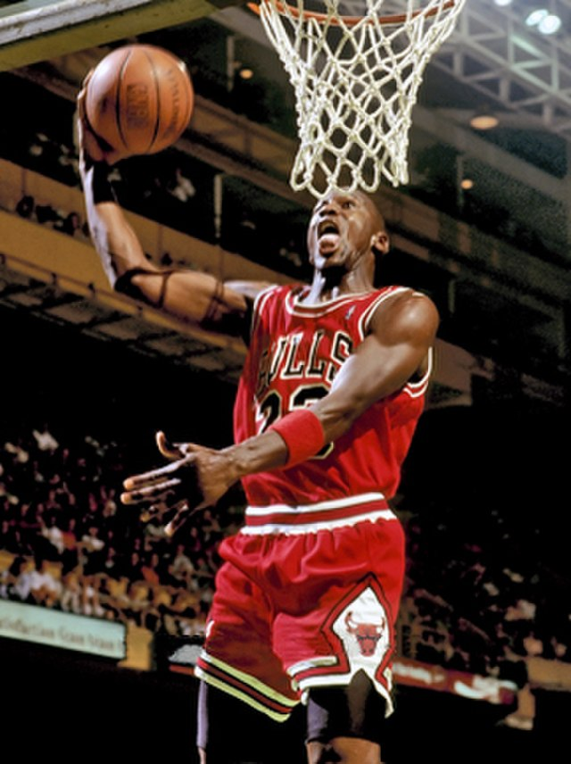
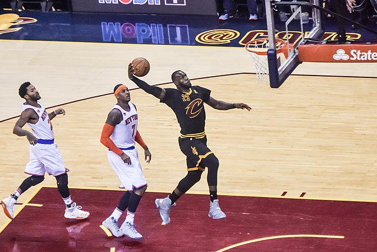
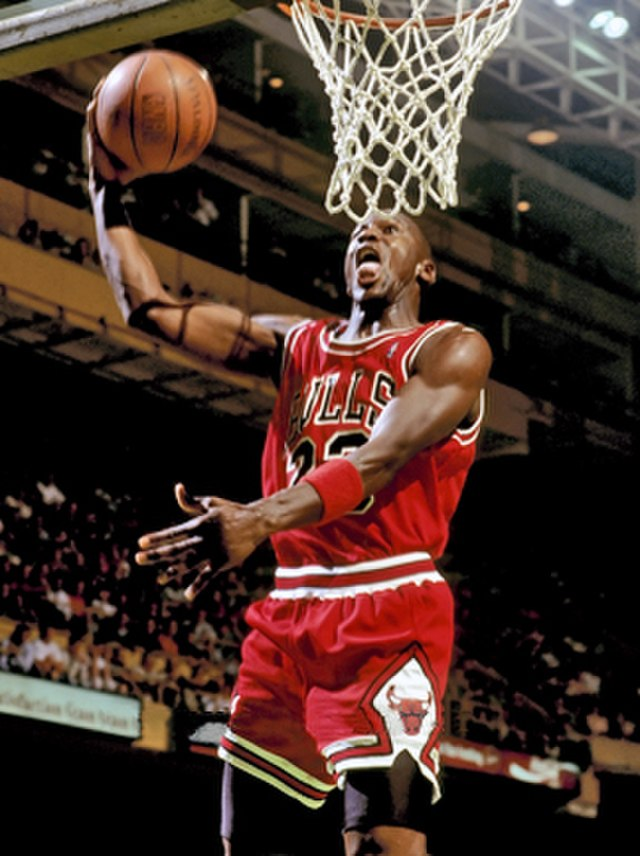
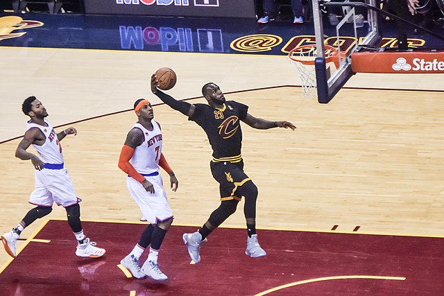

The Greatest NBA Players of All Time
The GOAT Debate & Its Fundamental Issue
Many people dispute who the GOAT of basketball is, but I believe thats not the right way to look at it. The reality of the situation is that these players played in different generations, that doesnt make them any less great. The game had not evolved as much and as such, it was different. For example, would a player like Jerry West who played in the 1960's and '70s be as good as a player from today? Of course not, but in the time he played, he was a Champ, MVP, All-Star and more.
3 Greats From 3 Different Eras of The NBA
 



Image Credit: Steve Lipofsky (Jordan)
Image Credit: Erik Drost (LeBron)
The Issue of Accolades
Many people will argue for accolades to be the decider of greatness, however, what about the players who played in a time where certain accoldades didnt exist? Take for example, Bill Russell. Bill Russell has 11 NBA Championships, but during his career the Finals MVP award did not exist. Reasons like this just add more reason to not argue about 1 greatest player of all time. Rather, the conversation should steer to the greatest player or team of a generation. Another popular showcase of this, is the reign and dominance of Micheal Jordan. His accolades on the court include:
- 6× NBA Champion
- 5× NBA MVP
- 10× Scoring Champion
- 6× NBA Finals MVP
- And more...